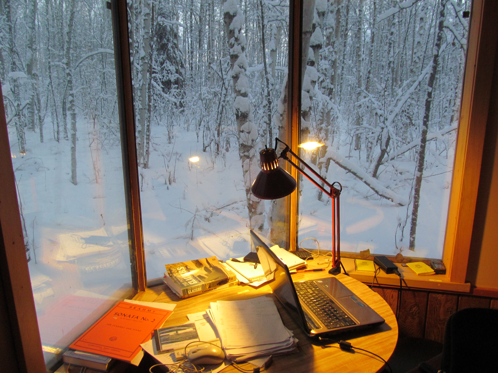
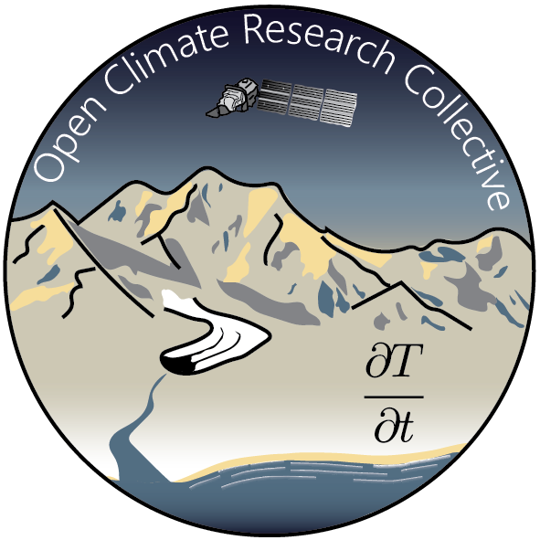
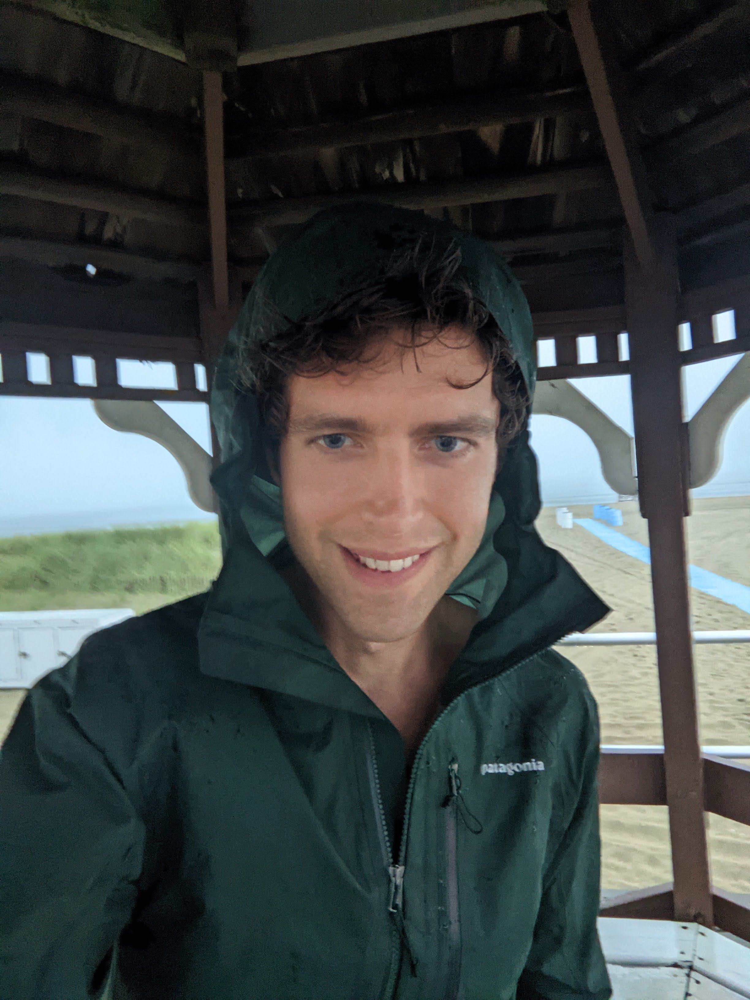
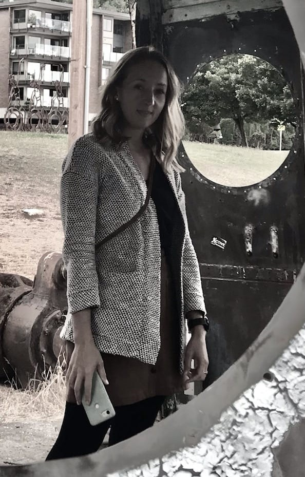

All Earth scientists have a mountain of data, results and half finished projects sitting on their laptops. It is not out of mal-intent that this information is hoarded and often lost, but rather the final step of producing a “complete” story for a peer reviewed publication is intensive and time consuming. While scientific publishing is the primary means of communicating findings, the academic stages beyond a doctoral degree are focused on self preservation through grant writing and appeasing the demands of a host institution.
There is a pyramid of availability of positions within academia. Undergraduate is widely available. Narrowing from Master’s, PhD, postdoc and faculty positions, the availability and competitive nature of the positions increase. With the increase in competition there is also an increase in the number of competitive applicants that were ultimately rejected. Uniquely, starting around the Masters/PhD level and continuing above, these rejected applicants carry a valuable and underutilized commodity: unpublished knowledge.
For individuals between the higher academic ranks or interested in finishing started projects but preferring to operate outside of the academic structure, we offer medium sized grants to complete and publish their findings. We will preference climate and arctic related research that predicts the state of our planet into the future. We will require all grant recipients to publish in open source journals as well as make all code publicly available and well annotated with working examples. We will encourage our recipients to publishes what journals often call “letters” or shorter publications which can be written and reviewed in a more expedient fashion and will help destigmatize these shorter publications as “not as good as” more comprehensive, narrative style science articles. Finally we will require our recipients to initiate and maintain for one year an undergraduate mentorship program targeted to underprivileged and underrepresented groups in an effort to demonstrate the accessibility of STEM fields to people of any background.
To start, by mid-2022, our goal is to raise at least $10,000 in order to fund the work of two climate scientists. In subsequent years we hope to raise more funds in order to both support more scientists and provide larger grant prizes.
Our logo features a glacier with a moderate amount of rock debris and medial moraines, an indication of moderate glacier health, where a future of full debris cover is likely in a climate that continues to warm. The glacier ruoff flows from the cryosphere to the ocean(s). Earths oceans are likely the most critical component in the climate-Earth system and the most likely to cause mass devistation to us and our infrastructure. Above is the Earth observing satellite, Landsat 9, which was launched on 27 September 2021 and will provide freely available imagery to scientists around the globe. Finally, we find the partial derivative (read as the letters d t d t) expressing the change in temperature (T) with respect to time (t) to be eloquent both in its formulation but also in how it contains the conceptual entirety of the climate crisis in a single term.
Dr. Sam Herreid
Open Climate Research Collective was founded by Dr. Sam Herreid who was, and is still, self-financing his glacier research working as a barista. His ability to contribute to science is evident in his publications, yet his temperament does not fit well into a traditional academic setting. After putting $2,000 of publication fees for a journal article on his personal credit card, he realized the most good he could do for climate research is to reduce this burden for other self-motivated/independent researchers. In short, he would like to heighten the value and acknowledgment of scientific contributions while bringing open-source information to the scientific community and public.
Lauren Moulder
Lauren Moulder is the Business Development Manager of an XR startup and former Development Officer at the Metropolitan Museum of Art.